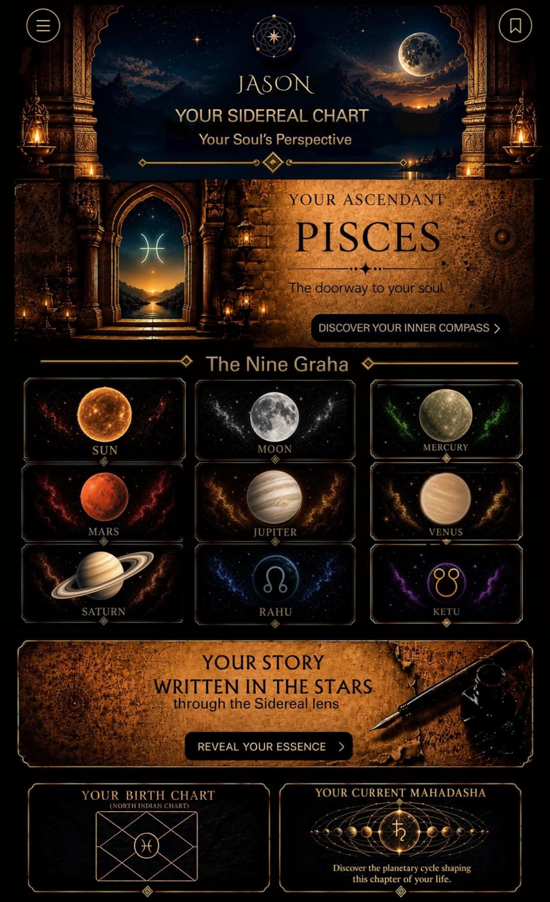

Tap to reveal your essence
Your Ascendant
✦
CANCER RISING
❧
Your Inner Compass
❧
The Essence of You
Your Dharmic Path
Sidereal Perspective
Home
My Chart
Explore
Saved
Account
ASCENDANT · v1 · inner compass